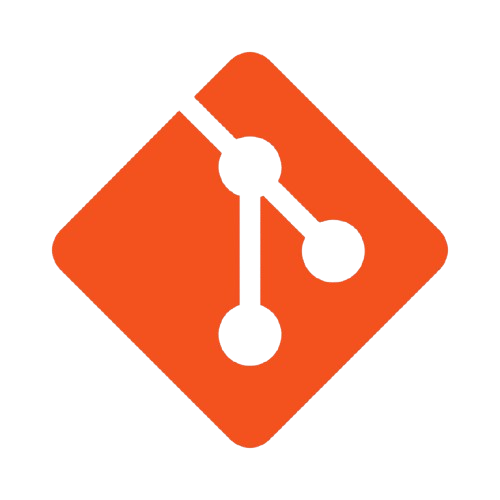

Welcome to My Portfolio
Automation Tester | Skilled in Selenium with Java | Problem Solver
I am a recent B.Sc. Computer Science graduate with hands-on experience in automation testing using Selenium with Java. I have a strong foundation in key tools such as TestNG, Maven, Jenkins, and GitHub, along with basic knowledge of API Testing and Postman, with some understanding of REST Assured APIs. Passionate about enhancing software quality, I am eager to contribute to developing efficient, high-impact test automation solutions. I am actively seeking opportunities to apply and expand my skills in automation testing.
Download my resume.
Check out my certifications here.
| Skill | Proficiency | Icon |
|---|---|---|
| Selenium WebDriver |
|
|
| TestNG |
|
|
| Maven |
|
|
| Java |
|
|
| Eclipse |
|
|
| Version Control |
|
 |
| Jenkins |
|
|
| Postman |
|
| Project Title | Description | Demo | GitHub Link |
|---|---|---|---|
| E-Commerce Website Testing | • Designed and executed automation test cases for the e-commerce platform to verify key functionalities such as product search, cart management, and the checkout process, ensuring a smooth user experience. | View on GitHub | |
| Selenium Testing | • Independently developed and executed automated test scripts using Selenium WebDriver with Java, focusing on the entire flight booking process, including flight search, seat selection, and booking completion | View on GitHub |
Contact Me
LinkedIn: My LinkedIn
Email: nisha202yadav@gmail.com